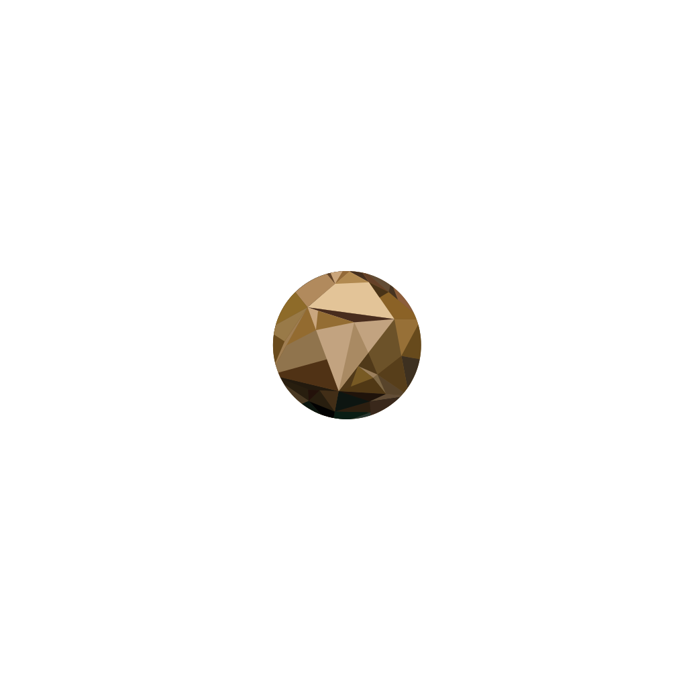
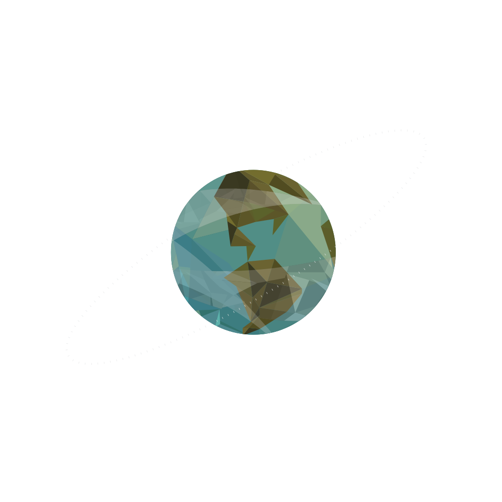
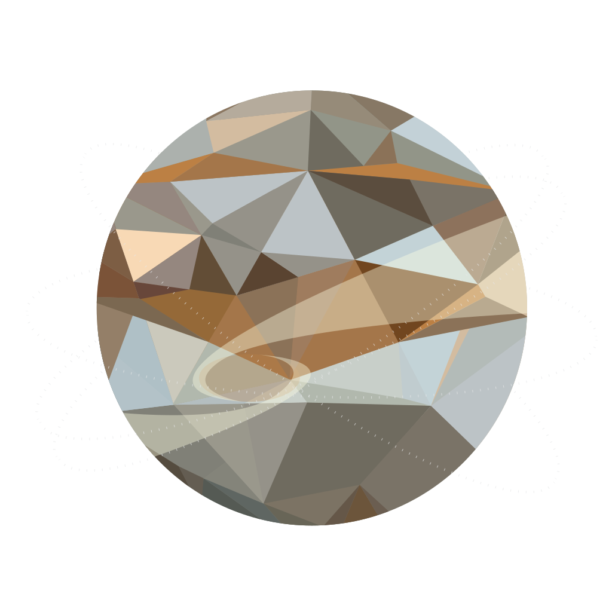
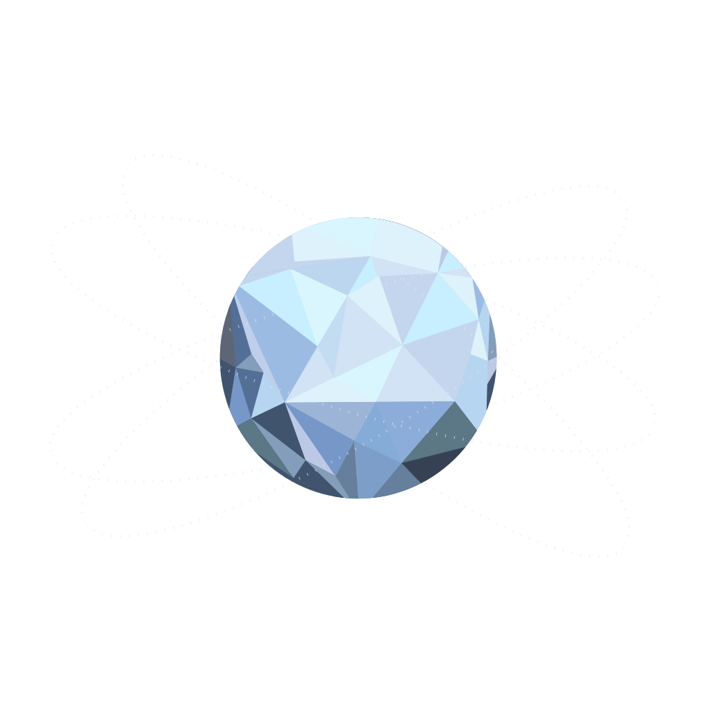

NSOC WEEK 2
CSS Animations
NSOC WEEK 2
CSS Animations
From the scorching heat of Mercury to the icy depths of Neptune, each planet holds unique wonders waiting to be discovered. As we traverse the vastness of space, we'll encounter gas giants with swirling storms, rocky worlds with ancient valleys, and moons that might harbor the potential for life.
The smallest and innermost planet, scorched by the Sun's heat.
Earth's toxic twin, shrouded in thick clouds of sulfuric acid.
Our blue marble, teeming with life and diverse ecosystems.
The Red Planet, home to the largest volcano in the solar system.
As we delve deeper into space, we'll explore the asteroid belt, a region teeming with rocky remnants from the early solar system. We'll witness the majesty of Jupiter's Great Red Spot and the ethereal beauty of Saturn's rings. Uranus and Neptune, the ice giants, will reveal their secrets as we push the boundaries of our exploration.
A region teeming with rocky remnants from the early solar system.
The largest planet, with its iconic Great Red Spot storm.
Known for its beautiful ring system, a celestial wonder.
An ice giant with a tilted axis, causing extreme seasons.
The windiest planet, with supersonic storms in its atmosphere.
Hope you had fun travelling in space.